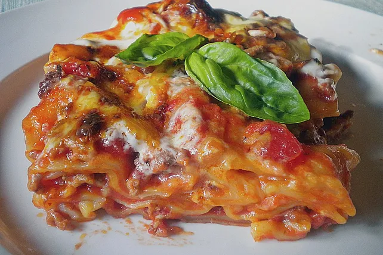

Idiotensichere Lasagne

Zutaten
- 250g Lasagneplatten
- 500g Hackfleisch
- 1 Zwiebel
- 2 Knoblauchzehen
- 1 Dose Tomaten (800g)
- Salz/Pfeffer
- Oregano
- 200g Käse(gerieben)
- 200g Creme fraiche
- 125g Wasser
- Parmesan
Anleitung
- In einer Pfanne das Hackfleisch in etwas Öl mit der gehackten Zwiebel und den fein gewürfelten Knoblauchzehen anbraten.
Inzwischen die Schältomaten in ihrem Saft vorsichtig etwas zerstampfen, sodass eine stückige Masse entsteht. Das Hackflei-
sch mit den Tomaten ablöschen und mit Salz, Pfeffer und etwas Oregano abschmecken.
- Etwas Tomatensauce in eine Form geben, darauf eine Schicht Teigblätter legen und dann wieder Tomatensauce, etwas gerie-
benen Käse aufstreuen und dann wieder eine Lasagneschicht, diese wieder mit Tomatensauce und Käse bedecken, wieder
Lasagneplatten, Tomatensauce, Käse und zuletzt wieder Teigblätter einschichten. Darauf dann die Crème fraîche streichen
und mit Käse bestreuen.
- Parmesan darüber streuen
- Mit dem Wasser übergießen und bei 200 Grad 30 - 45 Minuten backen